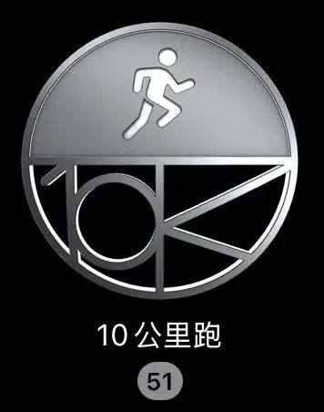
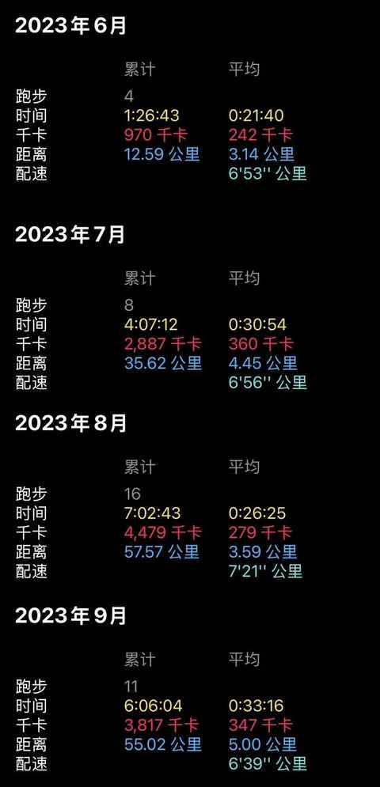
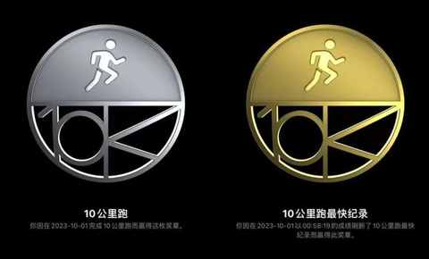
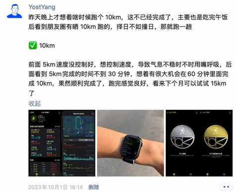
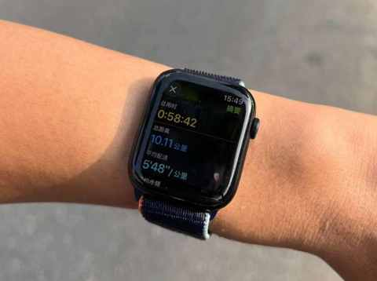
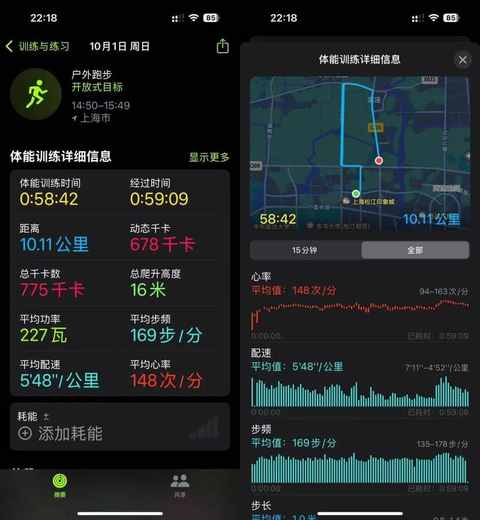
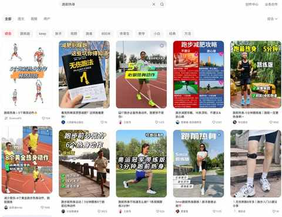
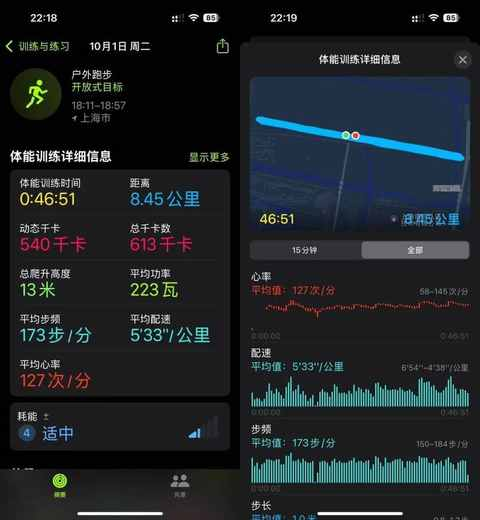
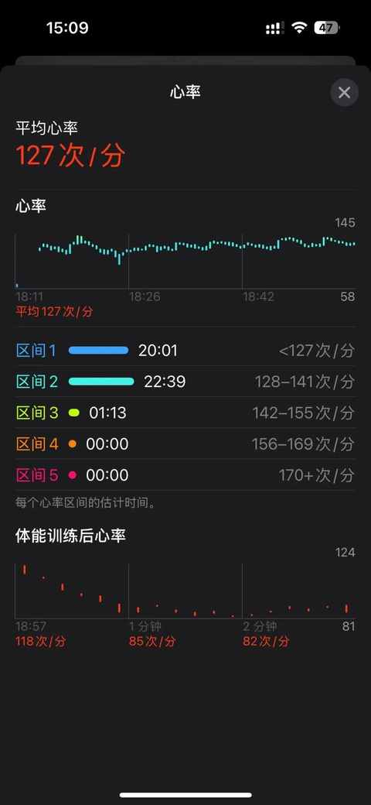

普通人一年的跑步实践，完成 51 次 10km 后的 5 点感悟
上个月，也就是 9 月份，做了一个小尝试： 单次跑步不低于 10km，最好隔天跑一次，不连续跑超过 3 天。
最终完成情况是：
- 总计 14 次 10km
- 有 2 次 10km 间隔 2 天
- 有 1 次背靠背 10km
- 没有连续 3 天都跑 10km

在 9 月份 14 个 10km 的加持下，从去年国庆节当天开始计算，一年时间总计完成 51 次 10km。

从去年 6 月份开始尝试跑步，到 2023 年的国庆节当天下午完成人生中第一个 10km，耗时 4 个月，累计跑量 160km。

战战兢兢的把时间控制在 60min 里面：

为什么会想到控制在 60min 里面呢，其实就是看到有人晒跑步的内容，觉得自己也可以试试看，然后就趁着送娃去兴趣班等待的时候去跑一跑。

跑之前已经做好5km 之后随时放弃的准备，好在顺利把气息和节奏调整好，最终在一个小时内完成了第一次 10km。


随着跑量的增加，会不由自主地想着每次跑步都能至少来个 10km，加上热身和拉伸的时间，大概 70 多分钟基本就能完成全天基础的热量消耗。
从第一次跑 10km 之后的浑身酸痛到现在跑完拉伸之后不太累，经过一年的跑步实践，对于 10km 有了一些更深入的个人感受：
1️⃣ 调整心态：先完成后完善
各个平台都有一些运动博主和专业人士，他们会从自身的角度去做一些基础知识的科普，例如：垃圾跑量、二区有氧、减脂心率、燃脂区间、LSD、间歇跑等等。
这些理论都很好而且很有道理，但具体到每个人身上就是大不一样的，只有在能轻松自如完成的基础上才能借助这些理念和方法去不断完善和提升运动表现。
2️⃣ 养好习惯：跑前热身和跑后拉伸
各类教程太多太多了，建议多检索多尝试，找最适合自己上手实操的方法和动作，有些热身特别好，但是要 10-15 分钟，有这个时间 2km 已经跑完咯。
如果是觉得最近状态不错，想试试 5km 或者 10km 能跑多快，那充足充分的热门时间就很必要。

拉伸动作同理，适合自己和容易上手最最重要，不追求每次拉伸要达到什么程度而是要养成每次跑完都拉伸的好习惯。
3️⃣ 认识数据：关注跑步相关数据
以下用昨天 8km 的数据作为示例：

可重点关注的 4 个数据是：步频、步长（步幅）、配速、心率。
如果想提高配速，让步频更快或者让步长加长，恰恰这两个项目对于普通人来说，都不好练。
在查各种资料加询问教练之后，最终得出的结论是：髋关节很不灵活+后侧链理论不足（臀部到腘绳肌）。
同时这个短板也会影响到运动强度，依然是以昨天 8km 的心率数据作为参考：

当时跑的时候诉求是希望尽量保持在二区有氧，保持在合适的强度和燃脂区间，但依然有接近50% 的时间心率处于一区，究其原因用大白话说就是迈不开腿。
4️⃣ 长期主义：跑的快远不如跑的久
对于速度的追求是人类的本能，所以难免会想越来越快，从 8 分配到 7 分配，再从 630到 6 分配，接着从 6 分配迈入 5 分配……
一年多的实践告诉我，能健康无伤的跑的久一些比跑的快重要的多，不妨偶尔状态好的时候，刷一刷速度检测自身的运动水平是否提升。
跑步是一项可以到 70 多岁依然能进行的一项运动。
5️⃣ 学无止境：正确且适合自己的跑姿
要想能把跑步作为长期的能进行几十年的运动，正确的跑姿十分必要。
小到摆臂的动作，大到肌肉发力的方式及脚底落地的方式等等，每个人的姿势都不一样。
特别是精英级别的运动员，都有自己独特的跑姿，但是他们都会有一些相同点，这些就是需要我们去一点点学习并通过一步步实践去调整的地方。